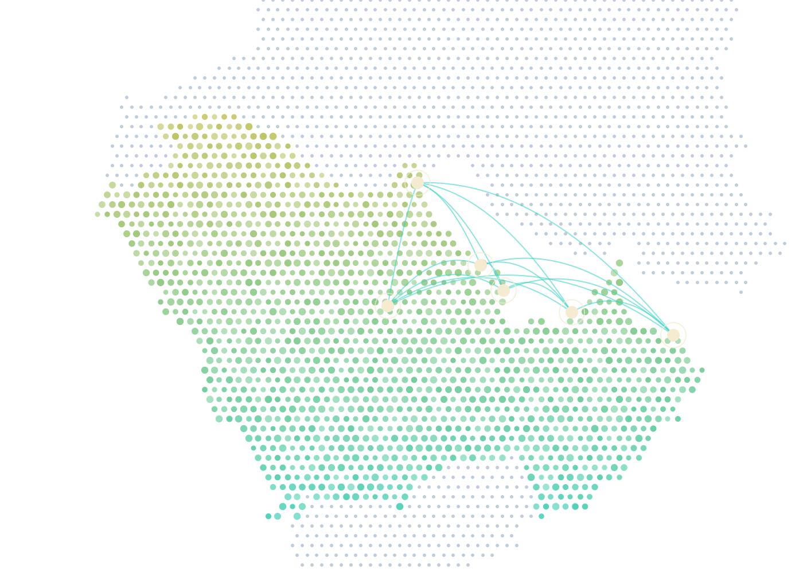
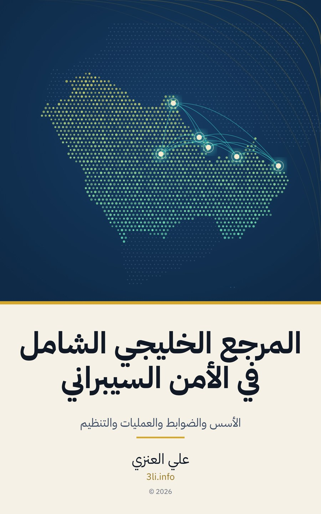

كتاب عربي من الخليج إلى الخليج، يجمع الأساس النظري والممارسة العملية والسياق التنظيمي لدول المجلس في مرجع واحد يصلح للمقرر الجامعي ولبرامج التأهيل الحكومية وللممارس في الميدان.

المراجع الأجنبية غزيرة لكنها تخاطب واقعاً آخر، والمحتوى العربي متناثر، وهذا الكتاب يضع المجال كله في سياق المنطقة ومصطلحها وأطرها.
إطار بنك الكويت المركزي الجديد والضوابط السعودية ومعيار قطر وقوانين الخصوصية الخليجية في موضعها من كل فصل، لا في ملحق منسي.
كل فصل يبدأ بأهداف تعلم ويُختم بخلاصة وجدول مصطلحات وأسئلة مراجعة وتمارين تصلح للمحاضرة والورشة والتقييم.
الحوكمة والامتثال والمرونة التشغيلية وحماية البنية التحتية الحيوية بلغة تخاطب صانع القرار والمهندس معاً.
ضوابط عملية مجربة ونتائج التقييمات المتكررة في مؤسسات المنطقة وما يُسأل عنه المدققون والجهات المنظمة.
افتتاحية ومقدمة ودليل للقراءة، ثم أربعة أبواب تتدرج من الأسس إلى الآفاق، ثم ثلاثة ملاحق، ويُقرأ كل فصل مستقلاً مع إحالات إلى ما يرتبط به.
تمارين كل فصل مع قوالب وبيانات عينة في مستودع مفتوح، تعمل عليها بنفسك أو تعتمدها في مقررك.
قالب سجل المخاطر بالحقول الواردة في الفصل الثالث مع سيناريو مكتمل تبني عليه.
labs/ch03
عشرون قاعدة حقيقية الشكل، صنف ما له مالك وسبب وما يجب حذفه كما في الفصل السابع.
labs/ch07
ست ثغرات بمعطيات الشدة والاستغلال والتعرض، رتبها وحدد المهل وفق الفصل الثامن.
labs/ch08
ورقة عمل لمحطة تحلية افتراضية، املأ المناطق والقنوات ومستويات الأمن كما في الفصل الثاني عشر.
labs/ch12
A comprehensive Arabic reference on information security and cybersecurity written from the Gulf for the Gulf. It covers foundations, technical controls, operations and resilience, and emerging topics, and places the GCC regulatory landscape, including the Central Bank of Kuwait framework, the Saudi national controls, the Qatar standard and the regional privacy laws, inside every chapter rather than in an appendix.
Each chapter opens with learning objectives and closes with a summary, an Arabic and English glossary, a map to international and Gulf frameworks, review questions and hands-on exercises, which makes it suitable for university courses and government training programs. Companion labs and figures are open source on GitHub.